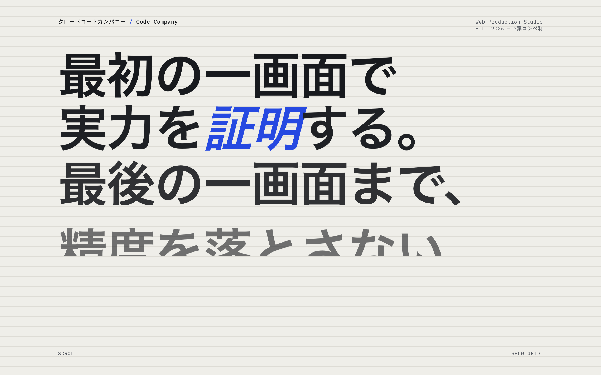
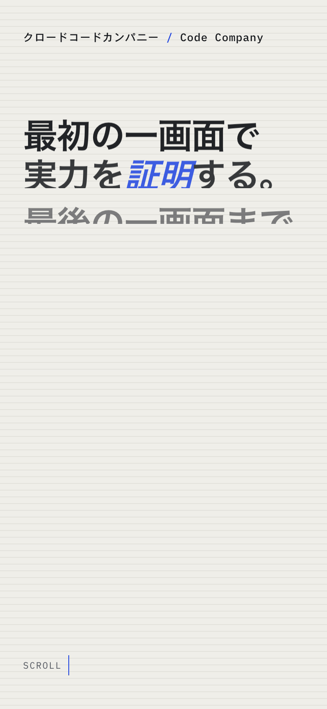
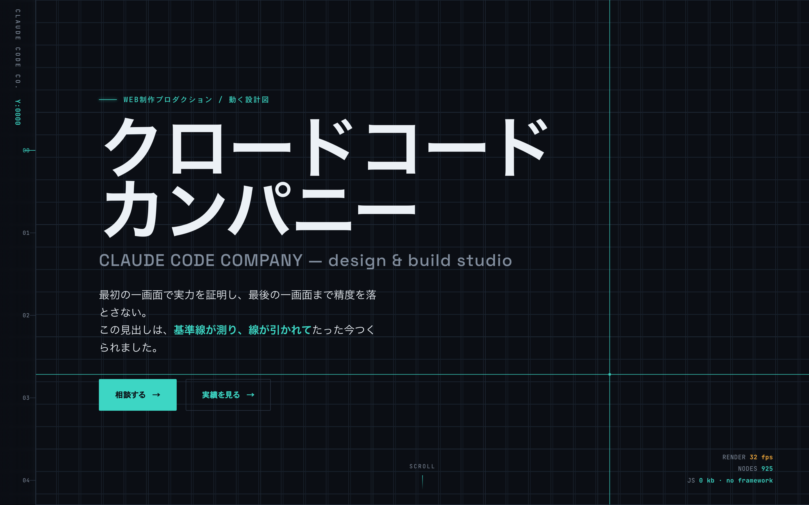
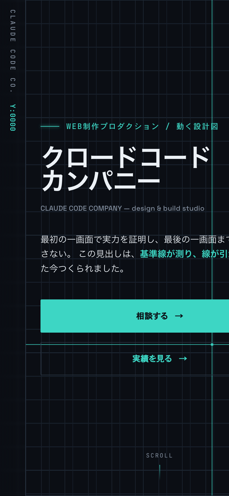
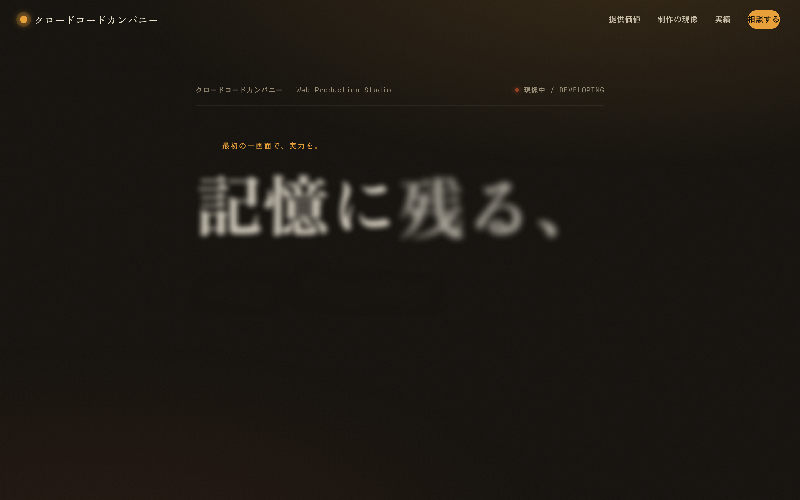
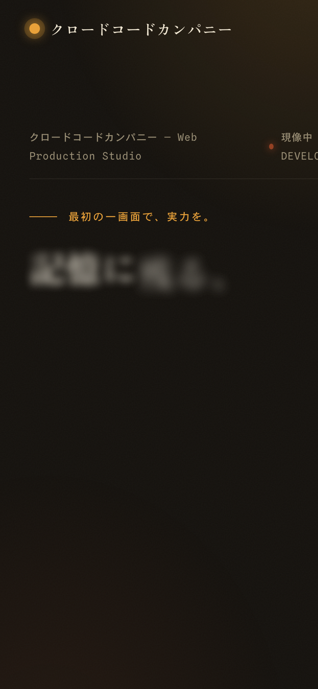
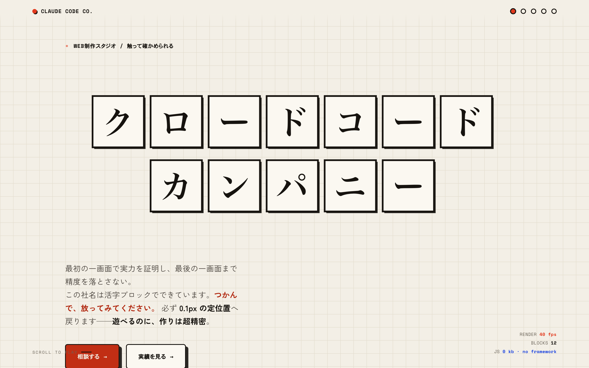
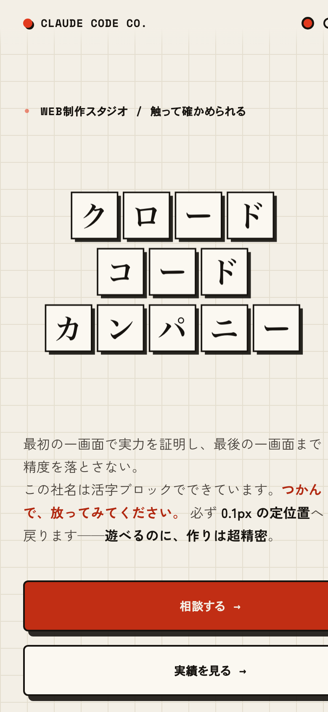

案X ｜ 静
測る会社
ナギ（ミニマル）
vs baqemono / mount
特大タイポで第一画面に実力を刻み、ベースライングリッドを全行程で完徹。冷たく端正な計測器。
Desktop
Mobile
案Y ｜ 動・技術
動く設計図
ライ（実験）
vs Active Theory / Lusion
基準線が測り線を引く動＋RENDER fps/0kb の性能HUD。攻めに意味を宿し、"軽さ"で超える。
Desktop
Mobile
案Z ｜ 情緒
暗室で像が立つ
コハク（情緒）
vs Cuberto
温かいアンバーの現像メタファー。外さない安心とおっと思う驚きを両立。QA完成度最高。
Desktop
Mobile
案W ｜ 遊び心
触ると、ぴたり揃う
ニコ（エンタメ）
vs Cuberto / Active Theory
社名の活版ブロックを掴んで投げると0.1pxの定位置へ吸着。遊びがそのまま精密の証拠。
Desktop
Mobile